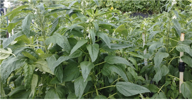

তিলের উৎপত্তিস্থল আফ্রিকা বা ভারতের মতো গ্রীষ্মমন্ডলীয় অঞ্চলে বলে মনে করা হয়। এটি এমন একটি ফসল যা দক্ষিণ-পূর্ব এশিয়া এবং আফ্রিকায় নিরাপদে চাষ করা যায়, যা উচ্চমানের তেল উৎপাদন করে। তেল উত্তোলনের পর অবশিষ্ট তিলের খাবার পশুখাদ্য হিসেবেও মূল্যবান।
তিলের বৈজ্ঞানিক নাম হল Sesamum indicum L., এবং এটি দেশ ভেদে beme, til, অথবা gingerly নামেও পরিচিত। ল্যাটিন আমেরিকায়, এটিকে ajonjolí বলা হয়। তেল নিষ্কাশনের পরে অবশিষ্ট বাদামী উপজাতকে তিলের কেক বা তিলের খাবার বলা হয়।
তিল ইতিহাসের প্রাচীনতম তৈলবীজ ফসলগুলির মধ্যে একটি এবং বিশেষ করে চীন এবং ভারতের মতো এশিয়ান দেশগুলিতে প্রচুর পরিমাণে উৎপাদিত হয়। বীজের রঙ সাদা থেকে কালো পর্যন্ত পরিবর্তিত হয় এবং এতে ৪৪-৫৪% তেল থাকে। অন্যান্য তৈলবীজ খাবারের মতো তিলের গুঁড়োও চাপ দিয়ে বা দ্রাবক নিষ্কাশনের মাধ্যমে উৎপাদিত হয়। চাপ দিয়ে, গুঁড়োতে এখনও প্রায় ৮-১২% তেল থাকে, যা সাধারণত আবার বের করা হয়।
তিলের আটায় মেথিওনিন এবং ট্রিপটোফ্যানের মতো প্রয়োজনীয় অ্যামিনো অ্যাসিড বেশি থাকে, কিন্তু এতে লাইসিনের পরিমাণ কম থাকে। অতএব, লাইসিনের উচ্চ মাত্রা এবং মেথিওনিনের পরিমাণ কম থাকা উপাদান, যেমন সয়াবিন আটা বা ইস্ট প্রোটিন, এর সাথে একত্রে ব্যবহার করলে এটি পরিপূরক প্রভাব দেখায়। প্রক্রিয়াকরণের সময় গরম করার তাপমাত্রা ১১০°C অতিক্রম না করা গুরুত্বপূর্ণ।
তিলের অঙ্কুরোদগমের জন্য সর্বোত্তম তাপমাত্রা হল ১৫-২০° সেলসিয়াস, এবং বৃদ্ধির জন্য আদর্শ তাপমাত্রা হল ২২-২৮° সেলসিয়াস। প্রতিটি গাছের মধ্যে ২০-২৫ সেমি ব্যবধান রেখে তিল বপন করা উচিত। বপনের জন্য, নির্ধারিত ব্যবধানে গর্ত খনন করুন, প্রতিটি গর্তে ৩-৫টি বীজ রাখুন এবং মাটি দিয়ে হালকাভাবে ঢেকে দিন, যাতে বীজগুলি লুকিয়ে থাকে।
তিলের জন্য প্রচুর পরিমাণে সারের প্রয়োজন হয় না। যদি বীজ বপনের আগে মূল সার প্রয়োগ করা হয়, তাহলে ফসল কাটার আগে টপড্রেসিংয়ের প্রয়োজন হয় না।
যেহেতু তিল লম্বা হয়, তাই বৃদ্ধির সময় এটির উপর দিয়ে পড়ে যাওয়ার (ঝুঁকি) ঝুঁকি বেশি থাকে। সাপোর্ট স্টেল স্থাপন এবং দড়ি দিয়ে কাণ্ড বেঁধে ডাঁটা বাঁকানো বা ভাঙা রোধ করতে সাহায্য করতে পারে।

সাপোর্ট দিয়ে ধরে রাখা
তিল জলপ্রেমী ফসল নয়। মাটি অতিরিক্ত শুষ্ক হয়ে গেলেই কেবল জল দেওয়া উচিত। ফসল কাটার সময়, কিছুটা শুষ্ক অবস্থায় গাছ লাগানো ভালো।
পেরিলার তুলনায়, তিল পোকামাকড় এবং রোগের প্রতি বেশি সংবেদনশীল। প্রধান রোগগুলির মধ্যে রয়েছে স্যাঁতসেঁতে হওয়া, শুকিয়ে যাওয়া, পাতার ঝলসানো দাগ, পাতার দাগ, মোজাইক ভাইরাস, পাউডারি মিলডিউ এবং মথের লার্ভা থেকে ক্ষতি। এই সমস্যাগুলি প্রতিরোধ এবং নিয়ন্ত্রণ করতে, ভাল বায়ু চলাচল নিশ্চিত করুন এবং প্রাকৃতিক কীটনাশক ব্যবহার করুন।
চিমটি কাটা (শীর্ষস্থান) গুরুত্বপূর্ণ। ফসল কাটার প্রায় ২০ দিন আগে অথবা ফুল ফোটার প্রায় ৪০ দিন পরে, যখন প্রায় ২৫টি ফুলের গুচ্ছ তৈরি হয়, তখন এটি করা উচিত। চিমটি কাটার সবচেয়ে নির্ভরযোগ্য সময় হল যখন মূল কাণ্ড, ভালোভাবে বেড়ে ওঠার পরে, একটি নির্দিষ্ট সময়ে বাঁকতে শুরু করে - এটিই শীর্ষস্থান চিমটি করার আদর্শ সময়।
ফসল কাটার সর্বোত্তম সময় হল যখন পাতা বাদামী হয়ে যায় এবং কাণ্ডের নীচের অংশে ১-২টি বীজের শুঁটি খুলতে শুরু করে। এই সময়ে, কাণ্ডগুলি কেটে ৫ থেকে ৮টি বান্ডিলে শুকিয়ে নিন, রৌদ্রোজ্জ্বল স্থানে সোজা করে দাঁড় করান।